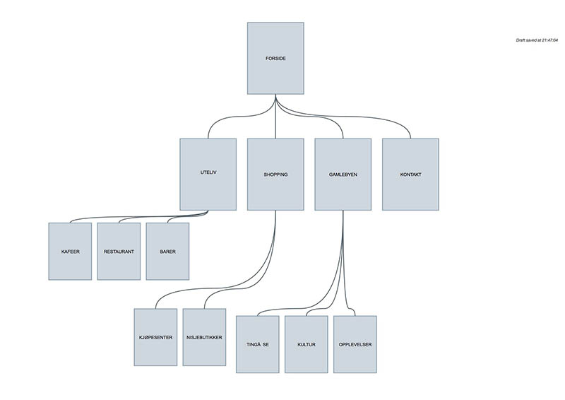

Oppgave 1
I denne oppgaven skal vi lage en turistportal for Fredrikstad. Her skal man kunne finne nytt og oppdatert innhold om hva som skjer, hvor man kan spise og fine steder å se. Målgruppen er turister, både tilreisende, hyttefolk og de som vil være turist i egen by. Nettsiden skal gi deg en smakebit av Fredrikstad og lokke deg til å bli kjent med uteserveringen på brygga, smågatene i Gamlebyen og nisjebutikkene i gågata.
For å få fram denne stemningen bygges siden opp med gode bilder og lett og oversiktlig tekst. Her skal du slippe å lese en hel masse, men lett finne fram til det du leter etter eller finne noe du kan fylle lørdagen din med.
- Ressurser
- Bilder (høyoppløselige bilder til forside, kategorisider og underkategorisider. I tillegg trenger vi bilder fra de ulike aktørene vi skriver om (restauranter, scener, butikker)
- Ikoner (for enkel og oversiktlig brukeropplevelse på undersider, sosiale medier etc)
- Tekst (se på konkurrerende sider og hente inn informasjon derifra, fra lokale sider, kommunens sider og Wikipedia)
- Google Maps (plotte inn lokasjonene på undersidene på ett felles kart)
- Fonter (prøve oss fram med webfonts?)
RSS-feed skal hente info fra siste oppdaterte oppføringerog filen ser slik her ut.
{kind=link}
{kind=link}
{kind=link}
{kind=link}
{kind=link}
{kind=link}
{kind=link}
{kind=link}